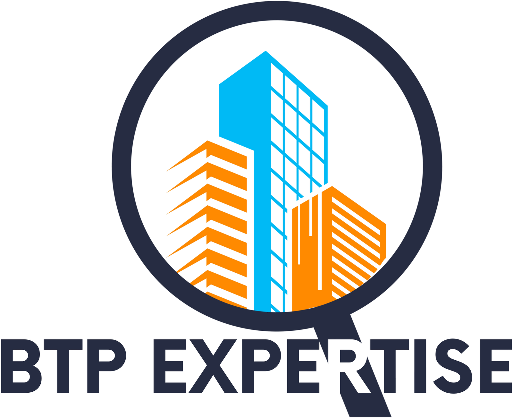

Le cabinet cherche des experts indépendants sur les Alpes-Maritimes et le Var.
Et de l'expérience terrain.
Fissures, humidité, malfaçons.
Qui tienne face à une entreprise, un assureur ou un juge.
Vous gardez votre statut et votre responsabilité professionnelle.
Le cabinet mobilise les compétences selon chaque dossier.
Constater, analyser, préconiser.
Installé à votre compte.
À jour.
Alpes-Maritimes (06) et/ou Var (83).
Un premier échange téléphonique, sans engagement.
Candidature sur btpexpertise.fr/rejoignez-nous · contact@btpexpertise.fr